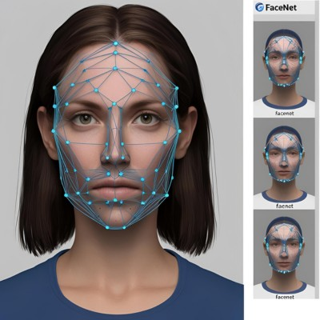
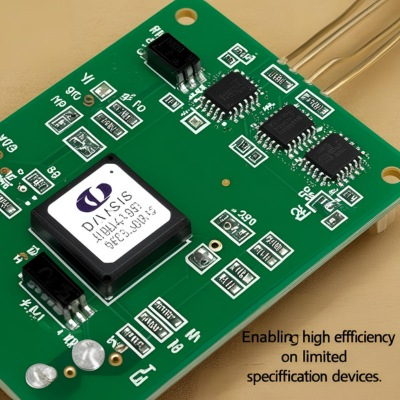
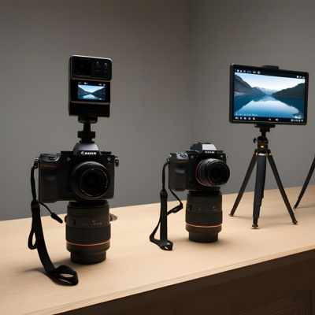

Hightlight Penelitian

Akurasi 100% dalam uji coba pada berbagai kondisi pencahayaan.
✅


FaceNet menghasilkan vektor wajah lebih presisi, mengurangi kesalahan identifikasi.
✅


Gabungan CNN, FaceNet, dan LBPH memungkinkan efisiensi tinggi pada perangkat spesifikasi terbatas.
✅


Diuji dalam berbagai kondisi, termasuk pencahayaan rendah dan variasi jarak kamera.
✅